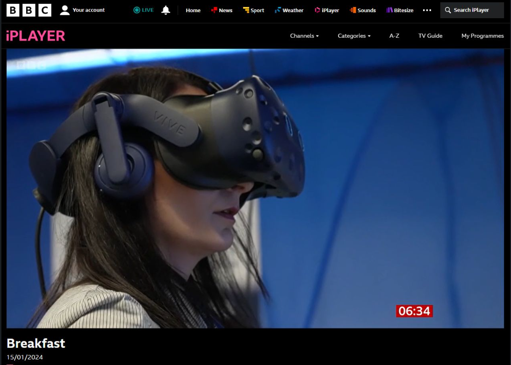
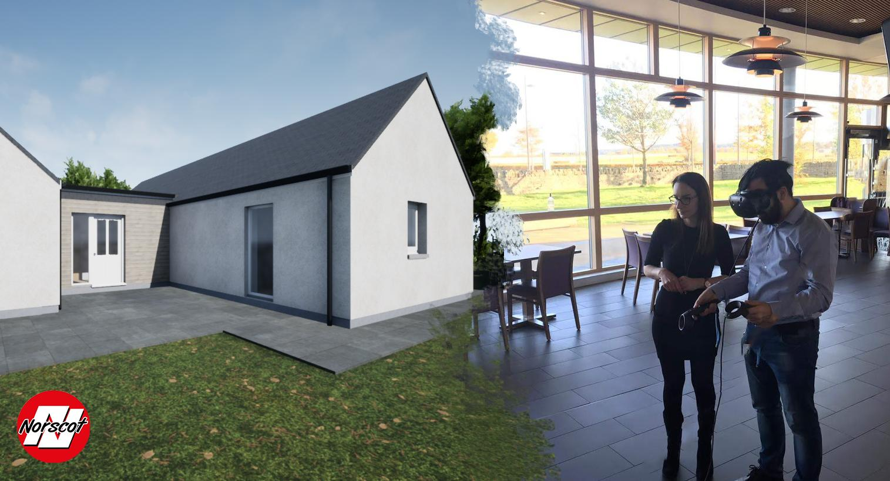

RoadGP
Product Owner
Service Design
UX & Usability
Forward Deployed Eng
System Architecture
Norscot & Strathclyde • VR Configurator & BIM
Nicander & Teesside • Tunnel DT & 20k IoT Assets
Cambridge & Costain • RoadGP UI, Service Design & Mapping
FDE • Product Owner • Service Design

BBC Feature Tunnel Digital Twin
Tunnel Digital Twin

VR Homes Simulation Univ. of Cambridge
Univ. of Cambridge
Senior Industrial Researcher & Digital Engineer at the University of Cambridge with 8+ years translating spatial data into pipelines, into intuitive products and measurable business outcomes.
• Forward Deployed Engineer (FDE): Client-embedded technical discovery, system architecture.
• Product Owner / PM: User research, multidisciplinary collaboration, product strategy.
• Service Designer: Automated infrastructure decision support.